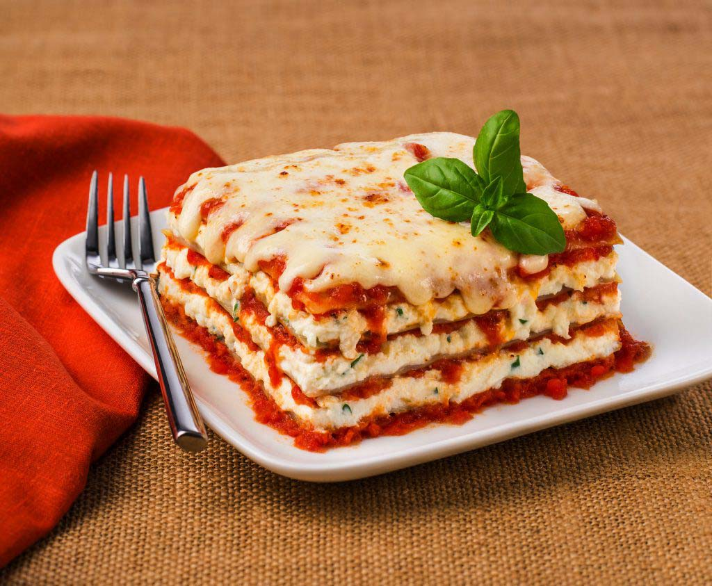

Lasagna Recipe

Description
Lasagna is a beloved Italian dish that is as comforting as it is
delicious. Layered with care and filled with a symphony of flavors,
this culinary masterpiece is a true crowd-pleaser. At its core,
lasagna is an assembly of wide, flat pasta sheets, generously stacked
and separated by indulgent layers of rich tomato sauce, creamy béchamel
sauce, and a delectable blend of cheeses. The pasta sheets, tender yet
firm, provide a sturdy foundation for the harmonious medley of
ingredients. Between each layer lies a tantalizing assortment of savory
fillings, often including seasoned ground meat, such as beef, veal, or
pork, sautéed vegetables like onions, garlic, and mushrooms, and
aromatic herbs like basil and oregano. The flavors meld together during
the slow baking process, creating a harmonious amalgamation of tastes
that is nothing short of sublime. The top layer is often crowned with a
generous sprinkle of grated cheese, which forms a delightful golden crust
when baked to perfection. With its hearty nature and irresistible aroma,
lasagna has become a timeless classic, inviting us to savor each bite and
revel in its comforting embrace.
Ingredients
- 3/4 pound lean ground meat
- 1 pound Italian sausage
- 1/2 cup minced onion
- 2 cloves garlic, crushed
- 1 (28 ounces) can crushed tomatoes
- 2 (6.5 ounces) cans cmmed tomato sauce
- 2 (6 ounces) cans tomato paste
- 1.2 cup water
- 2 tablespoons white sugar
- 4 tablespoons chopped fresh parsley, divided
- 1 1/2 teaspoons dried basil leaves
- 1 1/2 teaspoons salt, divided or to taste
- 1 teaspoon italian seasoning
- 1/2 teaspoon fennel seeds
- 1/4 teaspoon black pepper
- 12 lasagna noodles
- 16 ounces of ricotta cheese
- 3/4 pound mozzarella cheese, sliced
- 3/4 cup grated parmesan cheese
- 1 egg
Steps
- Cook sausage, ground beef, onion, and garlic in a Dutch over
over medium heat until well browned. Stir in crushed tomatoes,
tomato sauce, tomato paste, and water.Season with sugar, 2 tablespoons
parsley, bail, 1 teaspoon salt, Italian seasoning, fennel seeds, and
pepper. Simmer, covered, for about 1 1/2 hours, stirring occasionally.
-
Bring a large pot of lightly salted water to a boil. Cook lasagna
noodles in boiling water for 8 to 10 minutes. Drain noodles, and rinse
with cold water. In a mixing bowl, combine ricotta cheese with egg,
remaining 2 tablespoons parsley, and 1/2 teaspoon salt.
-
Preheat the oven to 375 degrees F (190 degrees C).
-
To assemble, spread 1 1/2 cups of meat sauce in the bottom of a 9x13-inch
baking dish. Arrange 6 noodles lengthwise over meat sauce. Spread with
1/2 of the ricotta cheese mixture. Top with 1/3 of the mozzarella cheese
slices. Spoon 1 1/2 cups meat sauce over mozzarella, and sprinkle with 1/4
cup Parmesan cheese. Repeat layers, and top with remaining mozzarella and Parmesan
cheese. Cover with foil: to prevent sticking, either spray foil with cooking spray
or make sure the foil does not touch the cheese.
-
Bake in the preheated oven for 25 minutes. Remove the foil and bake for an additional
25 minutes. Rest lasagna for 15 minutes before serving.